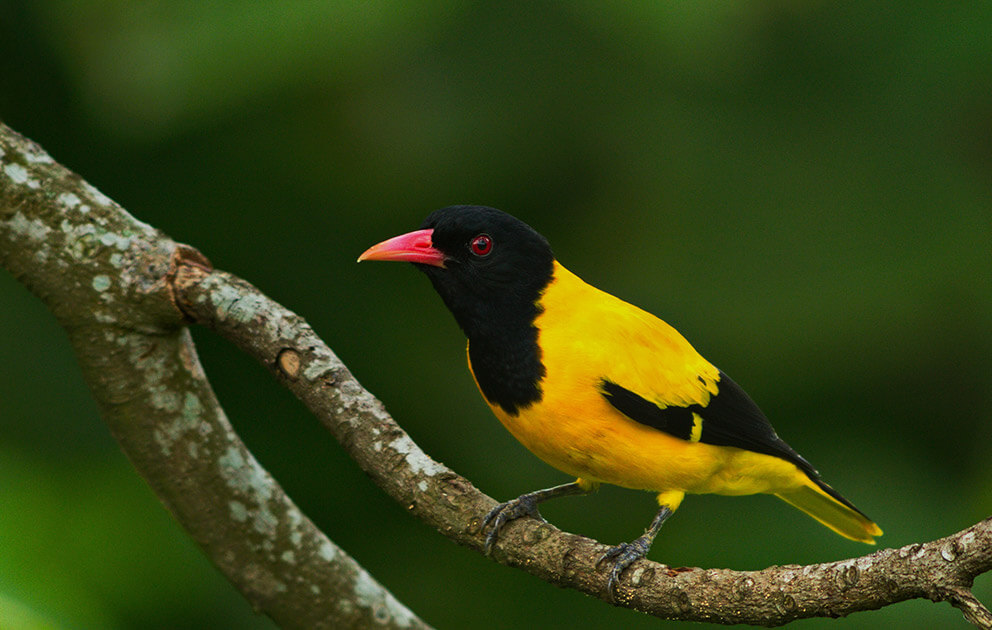
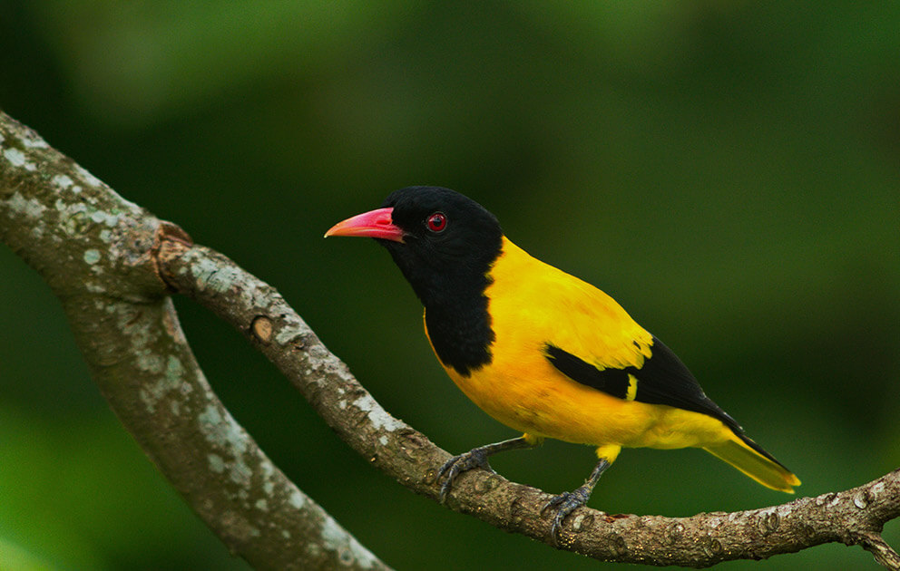

Welcome to Wilpattu National Park
Wilpattu National Park, Sri Lanka's largest, is renowned for its diverse wildlife, including a significant leopard population. This vast wilderness offers a unique experience, showcasing harmonious coexistence between animals and their natural habitat. Encounter majestic elephants and other free-roaming wildlife, but remember to approach with respect. Wilpattu invites you to explore its untamed beauty, promising captivating encounters with Sri Lanka's diverse flora and fauna.
About The Wilpattu National Park
Wilpattu National Park, Sri Lanka's largest and oldest national park, is known for its unique "Willus" or natural lakes, which fill with rainwater, creating a distinctive ecosystem. The park spans 1,317 square kilometers and is located in the northwest coast lowland dry zone. It is home to 31 species of mammals, including threatened species like the Sri Lankan elephant, sloth bear, leopard, and water buffalo. Birdlife is abundant, with species like the painted stork, open bill, little cormorant, Sri Lankan junglefowl, owls, eagles, and kites. The park experienced an annual rainfall of around 1,000 mm, with the northeast monsoon being the main source. Visitors can enjoy eco-tourism and safari opportunities year-round, with the best wildlife viewing during the dry season from February to October.
THINGS TO DO :
Bird Watching
Throughout your safari. There are 149 different species of birds in the world, many of which are indigenous. These include the easily observed Gray Hornbill, Brown-capped Babbler, Crimsonfronted Barbet, and Sri Lanka Jungle Fowl. At the Maradanmaduwa tank, a large breeding population of Painted storks is frequently sighted. The rare Malabar Trogon Harpactes fasciatus has only recently been observed in a dry zone at Wilpattu, which is a sign of the high caliber of the area's tall monsoon forest.
 


Wilpattu Tour
Both domestic and foreign visitors can choose between half-day and full-day game drive packages at Wilpattu Megha Safari. We leave early in the morning at 6 AM and return late in the evening, ending at 6 PM, for our full day game drive. You will be able to have breakfast and lunch inside the park during this all-encompassing safari adventure. We can arrange for these meals if that's what you'd like. We now offer half-day safari drives for those looking for a more condensed wildlife experience. Either the morning, from 6 AM to 10 AM, or the evening, from 3 PM to 6 PM, might be chosen for these.Axis Deer, Sambar Deer, Jackals, various Mongoose species, an abundance of birds, and other wildlife can all be seen during these enthralling wildlife tours. Some of the most elusive wildlife in the country can also be seen, such as the majestic Sri Lankan Leopard, the elusive Sloth Bear, magnificent Elephants, and graceful Barking Deer.

Is Wilpattu Worth Visiting?
Wilpattu National Park is considered worth visiting :